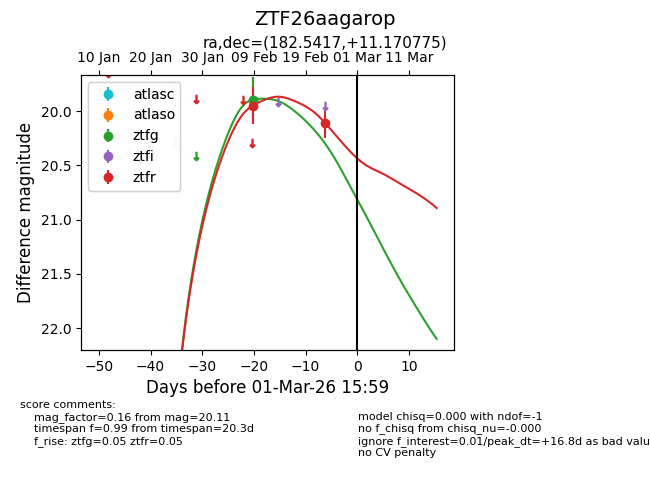
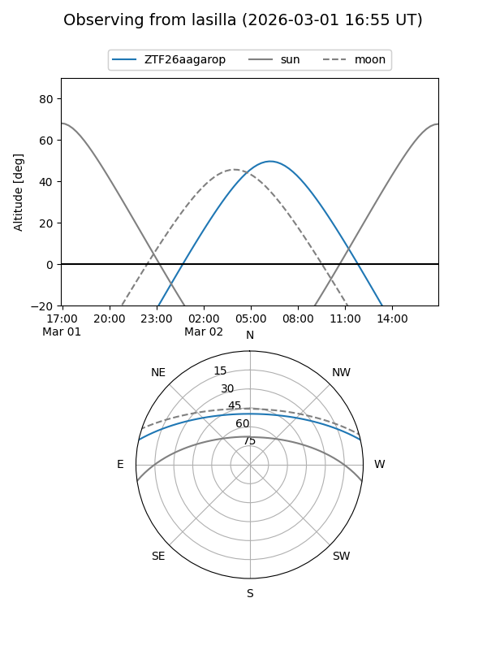
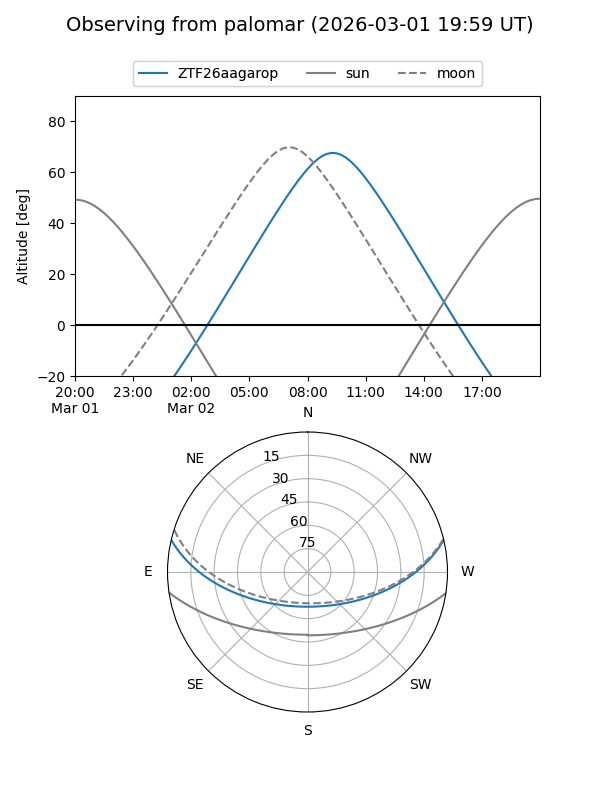
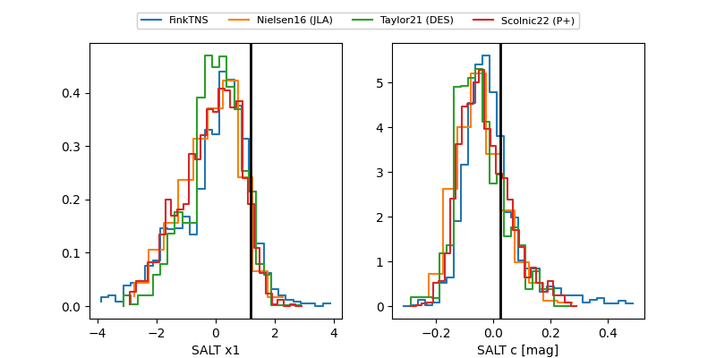

ZTF26aagarop
Target ZTF26aagarop at 2026-03-01 16:01
Aliases and brokers:
FINK: link
Lasair: link
ALeRCE: link
alt names
ZTF26aagarop (ztf,fink_ztf)
Coordinates:
equatorial (ra, dec) = 182.5417,+11.17078
equatorial (HMS+DMS) = 12:10:10.00,+11:10:14.79
galactic (l, b) = (269.6506,+71.32445)
Flags:
Photometry:
last ztfg=19.89, ztfr=20.11
2 ztfg, 2 ztfr detections
Lightcurve

Visibility


Additional plots
